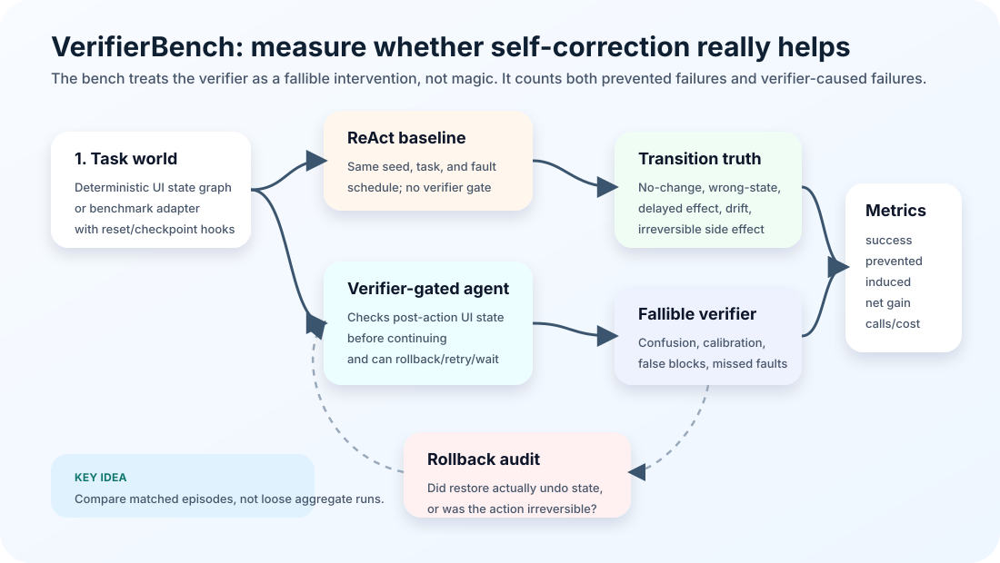

VerifierBench
Does checking every UI transition make an agent safer—or can the verifier become a new source of failure?
67,200matched episodes
6verification policies
+4 ptrisk-adaptive tutorial gain
A causal test bench that runs the same GUI task with and without a verifier, then separates prevented failures from verifier-induced failures, rollback damage, calibration error, and intervention cost.
Research anatomy +
InstrumentMatched seeds, fault schedules, actors, and policy arms across synthetic UI graphs and an AndroidWorld pilot.
ContributionTreats verification as a fallible treatment whose net effect must be measured—not assumed.
NextReal VLM actor/verifier pairs on reversible AndroidWorld tasks with independent audit oracles.